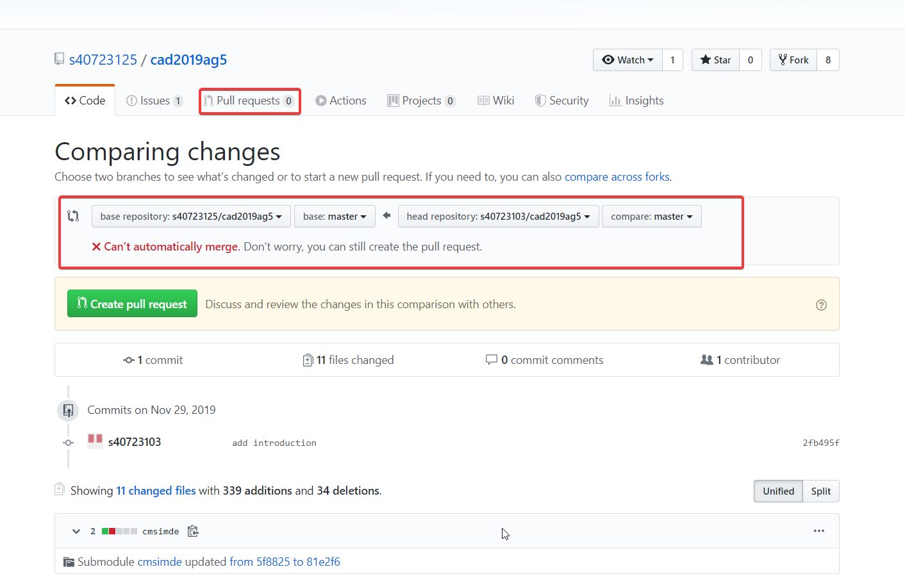
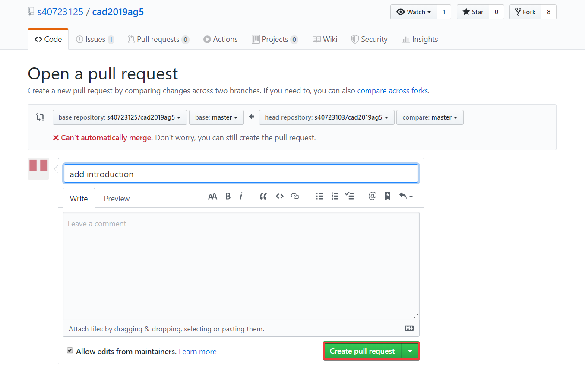
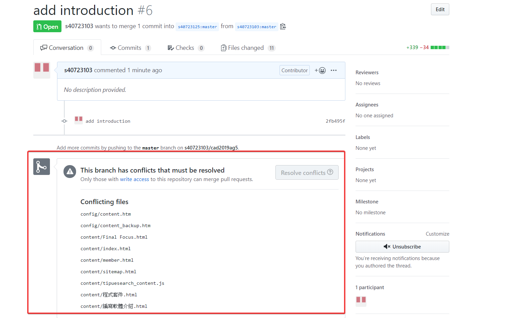

Week9 <<
Previous Next >> Week12
Week10-11
fork組別並推送資料pull request 給組長(管理者)
分別翻譯電子書之內容，依序NX Solid work inventor Creo(proe)=oneshape 逐一寫出軟體特性與分析之間的差異性。
ntroduction Pull request
正反向拉回差別在於資料傳遞的方向。
假設是正向拉回，是組員(無權限)將資料推送回組別倉儲後給組長(管理員)確認資料後使其合併。
反之，反向拉回是管理者將權限給予組員讓他們擁有可merge的權力，不過在這邊很常因為組員推送問題產生衝突，並且解決方式較為繁瑣，因此這學期並不推薦使用反向拉回的方式管理組別倉儲。
以下為正向拉回範例:
step1

先點入自己分組倉儲之pull request，出現畫面為(圖1)
這時出現merge問題，但仍可以pull request，並按下Create
pull request之按鍵
step2

確認完再按下標題與傳遞內容後再按下Create pull request
step3

出現畫面代表衝突檔案，需由管理員(組長)確認資料並合併之後處理衝突版面並再次推送，
藉此merge完成
Week9 <<
Previous Next >> Week12